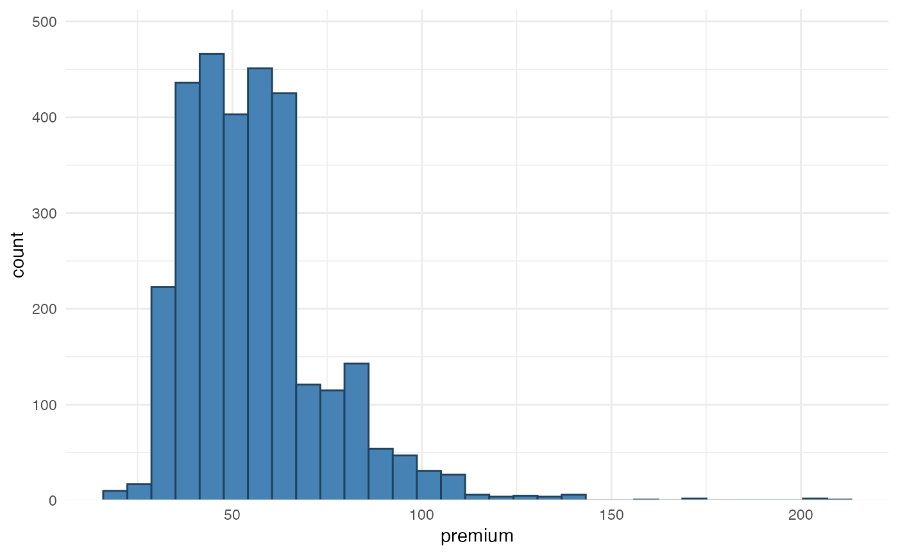

Visualize the distribution of a single continuous variable by dividing the x axis into bins and counting the number of observations in each bin. Data points that are considered outliers can be binned together. This might be helpful to display numerical data over a very wide range of values in a compact way.
histbin(
data,
x,
left = NULL,
right = NULL,
line = FALSE,
bins = 30,
fill = NULL,
color = NULL,
fill_outliers = "#a7d1a7"
)Arguments
- data
data.frame
- x
variable name in data.frame
datathat should be mapped- left
numeric indicating the floor of the range
- right
numeric indicating the ceiling of the range
- line
show density line (default is FALSE)
- bins
numeric to indicate number of bins
- fill
color used to fill bars
- color
color for bar lines
- fill_outliers
color used to fill outlier bars
Value
a ggplot2 object
Details
Wrapper function around ggplot2::geom_histogram(). The method is
based on suggestions from https://edwinth.github.io/blog/outlier-bin/.
Examples
histbin(MTPL2, premium)

histbin(MTPL2, premium, left = 30, right = 120, bins = 30)